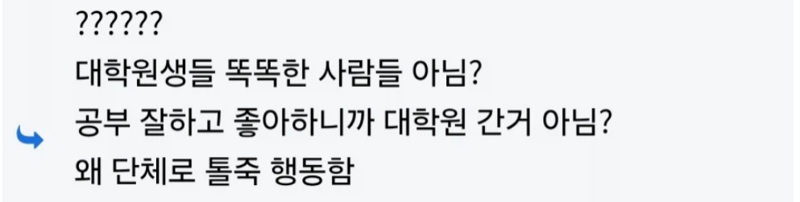
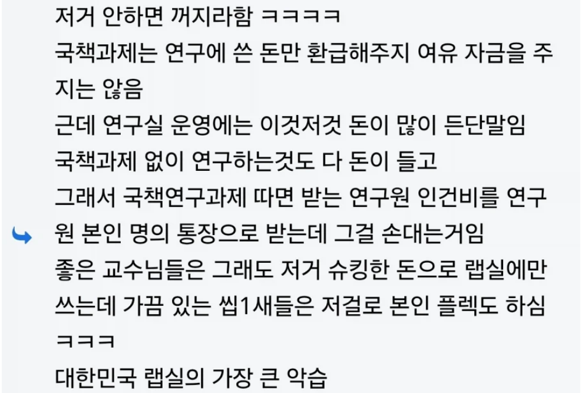
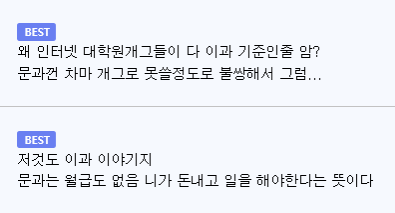
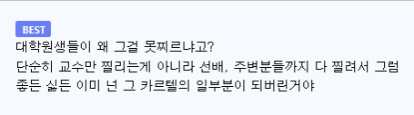

https://bbs.ruliweb.com/best/board/300143/read/76627950




https://bbs.ruliweb.com/best/board/300143/read/76627950




어중간하면 석사가 나은거 완전 ㅇㅈ
석사는 분야고 뭐고 좀만 걸쳐지면
훈련된 일꾼 느낌으로 지원할수있는데
박사는 보는 척도가 달라서 연구주제 꼬이면 취업 빡센거같더라
취업만하면 대우는 석사와 차이 크지만
뚫기 어려운게 문제
니가 말하는거 꼭 건설사 얘들이 절때 철근 안빼먹는다랑 비슷한거같어
사촌동생 박사 따려고 몇년을 갈리다 결국 못버티고 런침
내 주변 도르로는 아무도 저런 일 겪은 사람이 없는데
본인은 그래도 운좋게 돈 많은 랩에서 학위 따서 나름 월급 조금씩 받으면서 생활하긴 했는데
논문 때문에 방학 때 지방에 학교가서 실험하면서 들어보니 진짜 저런 곳 많더라
카더라가 아니라 진짜 행해지는걸 옆에서 보니까 생각 참 많아짐
교수 이거 끔찍한 새끼들이었구만
저래놓고 예산 깎으면 이공계 탄압이라고 할 새끼들 ㅋㅋㅋㅋㅋ
예산 삭감때 이공계 탄압 타령하는데 어처구니가 없더라 ㅋㅋ
근데 탄압 맞긴 함. 솔직히 현 시점에서 저짓 하는 곳은 정말 소수고 예산삭감으로 타격입는 곳들은 저런 교수들이 아님. 신생랩실이나 건실하게 성장중인 중견랩실들이 타격을 입지. 그런데 그 타격이 삐끗하면 랩 폭파될정도의 타격임.
약간 과하게 비유하자면 너가 말한건 남성 성범죄자 발생했다고 한국 남성들 전부 잡아다가 한달간 무급으로 성범죄 예방캠프 보내버리자는 느낌.
지식인척 존나게 꺼드럭 대더만
결국 슈킹범들이였네 ㅋㅋ
탑티어 연구실들은 대학원생 갈리는건 똑같지만 월급은 잘챙겨줌.
우리과 교수님중에 피로파괴쪽 탑티어 교수님 연구소 들어간 노예들 간증 들어보면,
마라톤 끌려나가는고 말고는 타 연구실에 비교해서 대우가 확실히 좋았음.
노동시간 빼고는 지킬거 다지키고, 노예들 자취방 월세도 사비로 지원해주고.
월급 손안대서 어지간한 대기업 신입만큼 대우받음. 옛날인데도 실수령이 300넘어가고, 월세까지 생각하면 400근처였음.
대학원생 처우는 어느기점으로 급속도로 개선되서
댓글들이 말하는 라떼는이 몇년전 라떼냐에따라 천차만별일거임ㅋㅋ
제발 그러길 바라는 마음으로 추천을 누른다
어쩌다보니 말년차엔 이것저것 합쳐서 350 좀 넘게 받았었음
따로 상여라도 받나? 법적으로 대학원생 급여 상한이 있어서 포닥도 200후반이 최대인데 300대를 어케 받음?
산단과제나 학교에서 주는 돈말고 학회나 외부플젝 하면 됨 나도 한달에 400넘게 받아봄
그건 걍 너가 해서 번거잖어.. 학교가 준게 아니라..
교수님이 따온 과제니까 암튼.. 원댓도 이것저것 합쳐서래잖아 학교에서만 줬다고는 안했음
지방사립대에서 과제잘따오는 교수님 밑에서 박사까지하고 이래저래 학교다시들어와서 포닥중인데 우리도 첨엔 저랬음 대학원생 인건비 하한 생기기전에 대신 그걸로 랩실운영비 쓰다가 요즘은 인건비는 다줌 랩실운영에 필요한건 또 다르게 돌려서 쓰고
톨죽행동 ㅋㅋㅋㅋ
ㅇㄱㄹㅇ 이과니까 그나마서로 사슬자랑하면서 하하호호하지 문과쪽은 ㄹㅇ 피눈물흘림
아하..그지랄을 하니까 정상적이였던 문과들이 죄다 흑화해서 나오는구나...
어두운 문학 탄생의 근원이 대학원생이였네...
ㄹㅇ 나도 연구실 있다가 못견디고 탈출했는데
버티고 학위 따는 노예들은 진심 아다만티움 사슬이라서
기업체에서 엄청 좋아함 ㅋㅋ
다른 의미로 검증된 거네 ㅋㅋㅋㅋㅋㅋㅋ
이거 캄보디아 만화에서 본거 같은데 맞나요?ㄷㄷ
요새 많이 없어진것도 맞지만 또 완전 없어진건아님
처벌강력해졌지만 못찌르는 이유는 찌르면 나포함 같은랩실사람들 인생이 2~3년 이상 삭제됨
밖에서는 모르는이유도 밖에서 찔러도 모든인원 온생이 2~3년이상 삭제 되기 때문에 밖에 말안하는것
사실상 논개가 아니라
다죽자 핵발사버튼이라
빡쳐도 누르기 망설여지는
요즘에 교수가 학생인건비 건들면 원아웃으로 그냥 해임당해..
기본적으로 형사고발 들어오는 동시에 수행중인 과제 전부 중단되고, 향후 몇년간 정부과제 수주도 못해.
재료비나 장비비로 장난치다 발각되면 연구 목적이었다 참작이라도 되서 자리라도 보전할 여지라도 있는데,
학생인건비처럼 학생 관련된 문제는 그런거 일절 없이 비윤리적인 문제라서 참작요소가 전혀 없어..
그리고 적발과 동시에 교수사회에서도 학생들 돈에 손대는 양아치로 소문나..
교수가 아직도 저짓거리를 하고있다는건 돈 몇푼에 목을 걸고 장난치는거야..
나 석사할때도 저런건줄 알고 내 급여 제외하고 랩실 사무원한테 돈 보내줬었는데 알고보니 이 시발련이 그냥 슈킹한거였음 ㅋㅋㅋㅋ
난 돈이 썩어나는 랩실에 무능한 대학원생 1 이었어서 오히려 내가 급여 슈킹하는 꼴 남
kaist인데 저런거 없는데 다른 대학은 잇나 모름
좋은 학교로 가야되는 이유
대학원도 사람사는 곳이라 할만해. 돈도 잘주는곳은 꽤주고. 츄라이츄라이
톨죽행동 씹 ㅋㅋㅋㅋㅋㅋ
이야~
먹여줘 재워줘 가르쳐줘 돈도줘
얼마나 좋으냐?
그럼 교수님이 먹여주고 재워주고 가르쳐주고 용돈주고 논문안뺏고 박사학위주고 취업알선까지 해줘야 한단 말이냐
저건 벌써 옛날 이야기 된지 오래 되지 않았냐?
어차피 저런 랩실 특이, 산학과제 존나 날치기로 따와서 인건비 쥐어짜는 연구비 받고 돌아가는 랩실이라서. 거기서 학위 따고 나와봐야 학위 때문에 눈은 존나 올라갔는데, 취업 분야만 존나 좁아져서 본인 커리에어 도움 될 확률 존나 낮아서, 저딴 소리 들으면 그냥 바로 빤스런 하며 됨.
옛날이야 어땠을지는 모르겠지만 요즘 연구비 인건비 후려치면 뒤짐. 물론 네임밸류 떨어지는 대학원들이야 학위라도 따 필요한 애들 쥐어짜서 알게 모르게 저렇게 하는 몇몇 랩이 있겠지만, 요즘 저 짓거리하면 바로 순장 당함.
그리고 이공계 대학원 갈 애들도 저런거 버틸려면 랩 아웃풋이 좀 있던가, 아니면 날 잘 이끌어줄 랩 선배들이 있던가, 아니면 과제들이 존나 개쩐다거나 한거 아니면 그냥 바로 관두고 도망치면 됨.
어차피 저렇게 쥐어 짜는 랩실 가서 논문 내서 백날 SCI 쳐 올려봐야 IF좆박은건 안봐도 비디오고, 취업 시장에서 이점 좆도 없음.
석사면 그래도 어디 연구소 가서 채찍질이라도 당하면 쓸만한 인력정도로 직업 훈련이 가능하니 비교적 괜찮지만 박사인데 어디 본인 논문 주제가 어줍잖다 싶으면 서류에서 광탈임. 그렇다고 낮은 포지션으로 뽑아준다? 보통 박사들도 대가리 굵어서 본인이 불편해서 절대 안뽑음.